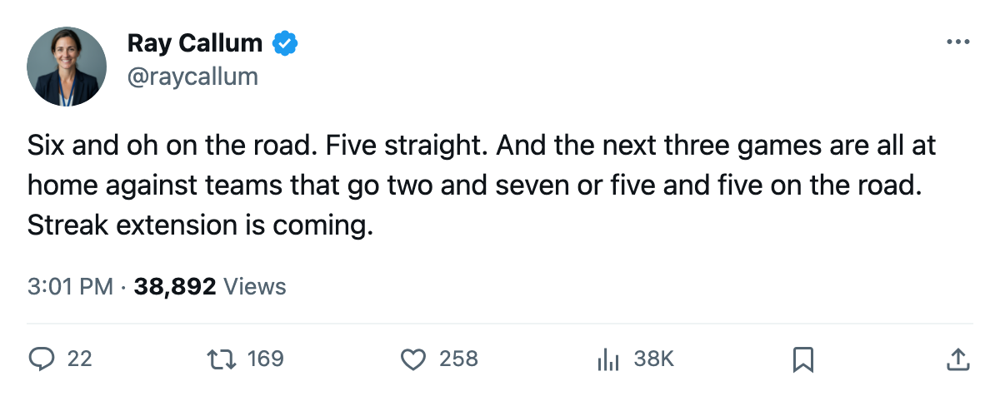

Numbers Game: New Jersey Has Not Lost on the Road, and Nobody Else Can Say That Either
6-0 away, a 5-game win streak, and the goalie shuffle from Monday is still working.
 Ray CallumSenior correspondent · Home Ice Network
Ray CallumSenior correspondent · Home Ice Network
 New Jersey Devils beat Montreal 2-1 last night to extend its win streak to five and keep the road record at 6-0. The closest in the league is Pittsburgh at 6-2, then Boston at 7-3.
New Jersey Devils beat Montreal 2-1 last night to extend its win streak to five and keep the road record at 6-0. The closest in the league is Pittsburgh at 6-2, then Boston at 7-3.
The Devils are 10-2-1 with 25 points, 4th in the Eastern Conference. They have played 15 games, fewer than anyone else in the top five, a game and a half in hand on  Philadelphia Flyers and
Philadelphia Flyers and  Tampa Bay Lightning at 21.
Tampa Bay Lightning at 21.
| Club | Road Record | Streak |
|---|---|---|
| New Jersey Devils | 6-0 | W5 |
 Pittsburgh Penguins Pittsburgh Penguins | 6-2 | W1 |
 Boston Bruins Boston Bruins | 7-3 | L2 |
 Toronto Maple Leafs Toronto Maple Leafs | 5-1 | L1 |
 Nashville Predators Nashville Predators | 6-5 | W4 |
The goalie shuffle from Monday is part of the story.  Martin Brodeur93 had been the starter through 13 of the team's 15 games at 87 percent, and the line moved to
Martin Brodeur93 had been the starter through 13 of the team's 15 games at 87 percent, and the line moved to  Michael Leighton78 and
Michael Leighton78 and  Steve Passmore73 with one appearance each. The defense behind all three keeps the road record clean: 31 goals against in 15 games, the fewest in the conference.
Steve Passmore73 with one appearance each. The defense behind all three keeps the road record clean: 31 goals against in 15 games, the fewest in the conference.
 Turner Stevenson72 is out with a foot, back 2005-11-24. Vernon Fiddler70 (shoulder) is out until 2005-11-30. Both are third-line guys. The forward depth on the top two lines has not thinned.
Turner Stevenson72 is out with a foot, back 2005-11-24. Vernon Fiddler70 (shoulder) is out until 2005-11-30. Both are third-line guys. The forward depth on the top two lines has not thinned.
The schedule this week is home, home, home: Buffalo on 2005-11-19, the Rangers on 2005-11-21, Tampa Bay on 2005-11-23. Buffalo is 3-5 on the road, the Rangers 5-5, Tampa Bay 2-7. None of those three travel well, and the Devils have beaten nobody good on the road this season: Montreal twice (both losses) and Columbus.
